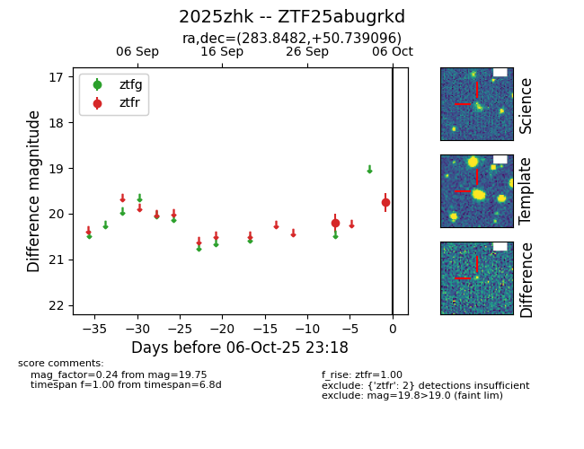

FINK: ZTF25abugrkd
Lasair: ZTF25abugrkd
ALeRCE: ZTF25abugrkd
TNS: 2025zhk
YSE: 2025zhk
ZTF25abugrkd (ztf,fink)
2025zhk (tns,yse)
equatorial (ra, dec) = (283.8482,+50.73910)
galactic (l, b) = (80.5777,+20.08029)

last ztfr=19.75
2 ztfr detections